Cuarenta años después de ser proclamado candidato a la presidencia , el espíritu de John F. Kennedy planeó hoy sobre la convención demócrata de Los Angeles , donde su hija Caroline apostó por renovar la " nueva frontera ".
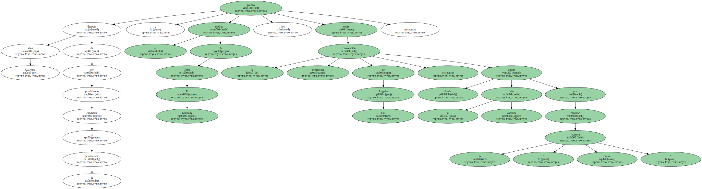Ante una audiencia entregada y nostálgica , que la aclamó a veces con lágrimas en los ojos , la única superviviente del presidente asesinado aseguró que el llamamiento lanzado por su padre a favor de una " nueva frontera " para EEUU " no tiene límite temporal " y que " nosotros somos ahora la nueva frontera ".
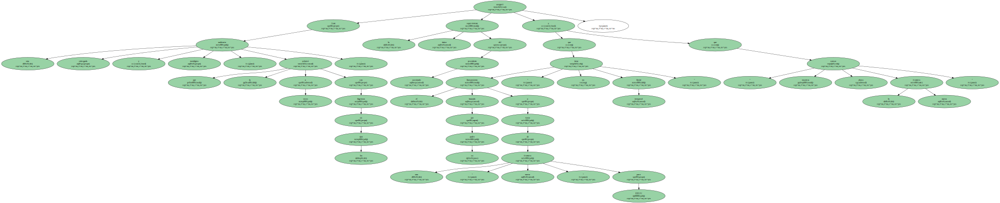Entre vítores , aplausos , gritos y oleadas de pancartas con el apellido Kennedy , Caroline Kennedy llegó al podium del centro Staples para devolver a las filas demócratas el recuerdo de su más adorado presidente.
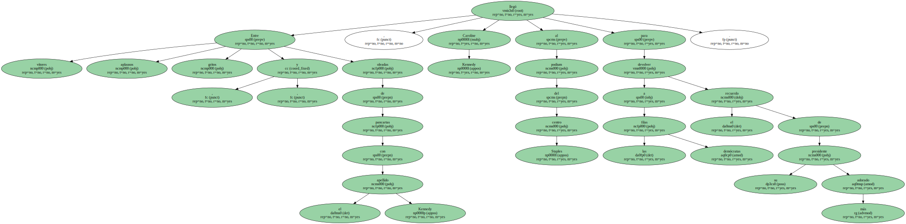" Sé que el espíritu de mi padre vive y os lo agradezco " , dijo Caroline Kennedy en su primera aparición en una convención demócrata en apoyo del candidato del partido al que tradicionalmente pertenece su familia.
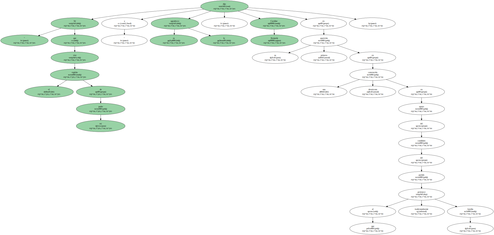La hija del presidente asesinado reivindicó que el programa demócrata es el que mejor defiende los derechos civiles , la diversidad de EEUU y la necesidad de una " sociedad abierta " , y dijo que , " ahora que tantos estamos tan bien , es el momento de pedir más de nosotros ".
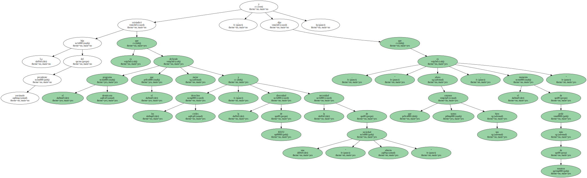Aseguró que a ella , al igual que el candidato demócrata , Albert Gore , le enseñaron a " creer que el mundo puede hacerse nuevo cada vez " y pidió a los estadounidenses que permitan al actual vicepresidente de EEUU crear el país " de nuestros ideales ".
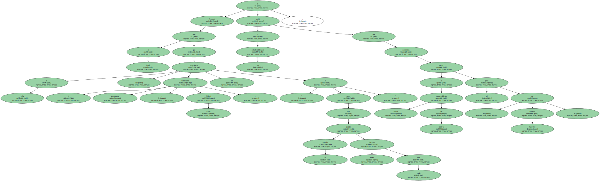Lejos de Los Angeles , Al Gore recogió la antorcha del liderazgo demócrata de manos del presidente estadounidense , Bill Clinton , en un acto simbólico celebrado en Michigan.
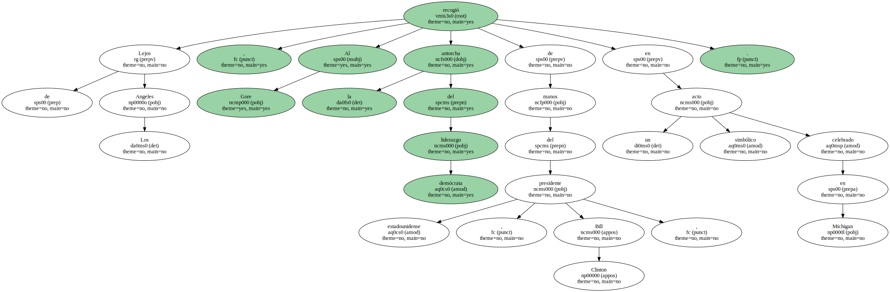El apoyo de los Kennedy a Gore fue esta noche total , ya que en la convención demócrata aparecieron otros tres miembros del clan , entre ellos su patriarca , el senador Edward Kennedy , hermano de John y de Robert Kennedy , también asesinado.
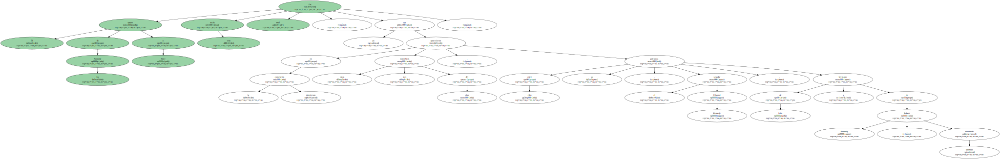" Debemos escuchar las palabras de mi hermano aquí en Los Angeles . Habló de una elección y esa es ahora nuestra elección " , afirmó Ted Kennedy ante un público enfervorecido al que repitió las palabras del presidente Bill Clinton : " No volvamos atrás ".
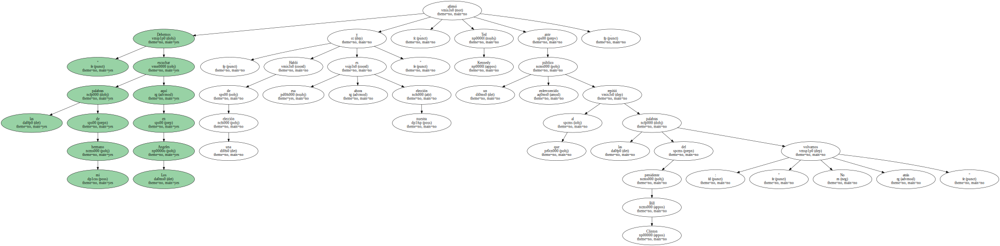Edward Kennedy , que fue presentado por su sobrina , aseguró que sólo ha apoyado tanto y con tanto entusiasmo a otros dos candidatos presidenciales : sus hermanos John y Robert.
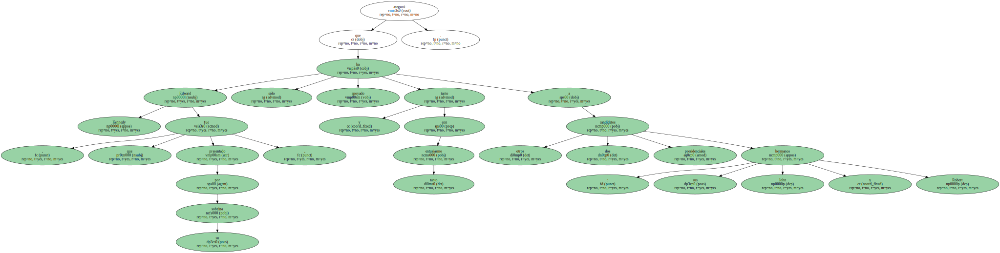El senador por Massachusetts consiguió que los más de 4.300 delegados asistentes corearan sin descanso la frase " lucha por Al Gore , porque él está luchando por ti ".
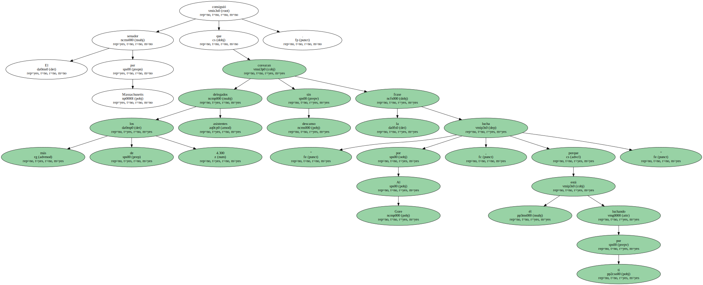Kennedy lanzó críticas contra los republicanos que en el Congreso se oponen a la extensión del servicio de salud para todos los estadounidenses , una vieja reclamación suya.
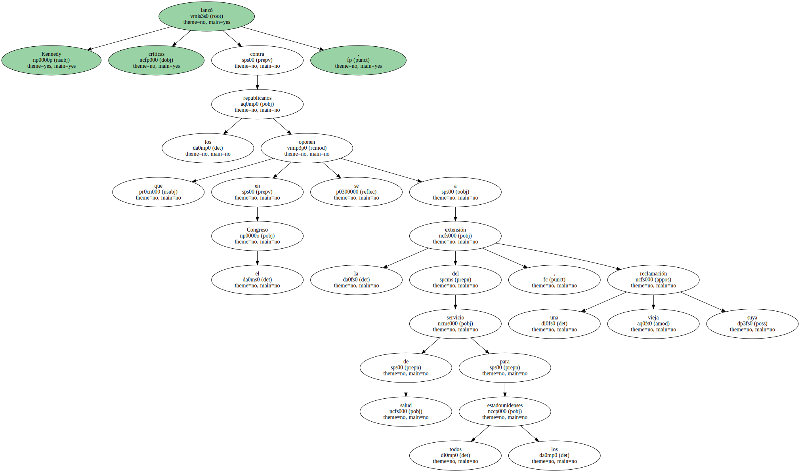La reclamación de unos servicios sanitarios que no dejen a 44 millones de personas sin cobertura fue una de las reivindicaciones lanzadas esta noche por Bill Bradley , que luchó sin éxito por la candidatura demócrata a la presidencia.
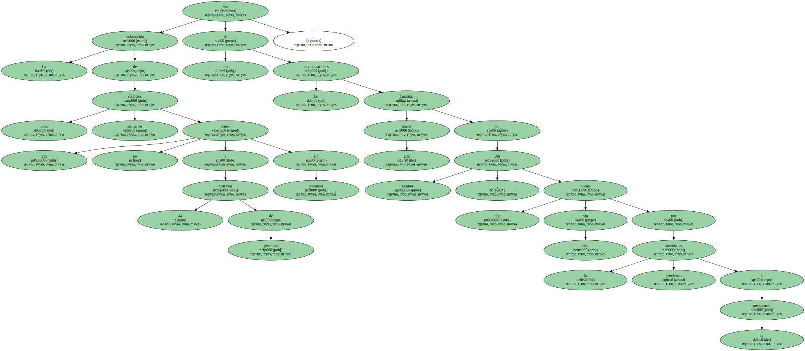Bradley , que perdió las primarias frente a Gore , expresó su apoyo público al candidato a la Presidencia , en cuya campaña prometió que " trabajará duro ".
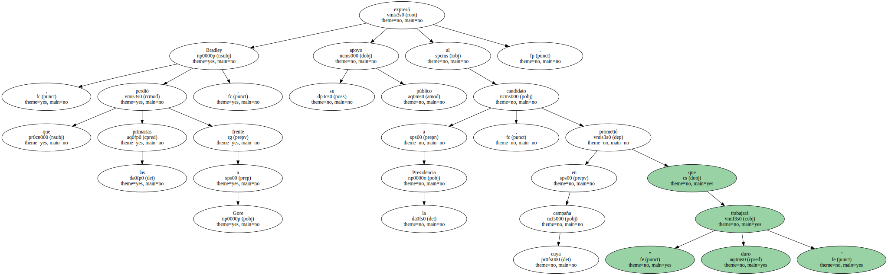El ex senador por Nueva Jersey se burló del lema del candidato republicano a la presidencia , George W. Bush , que promueve un " conservadurismo compasivo ".
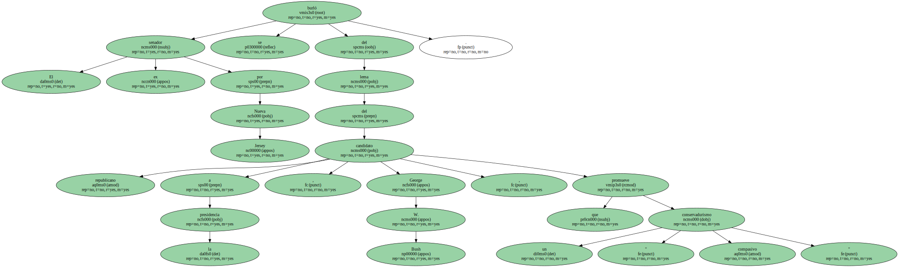" Los demócratas hemos sido compasivos durante décadas ... No lean nuestros labios , miren nuestros actos " , señaló en referencia a la conocida frase de George Bush padre " Lean mis labios , no más impuestos " , que finalmente no fue aplicada en la práctica.
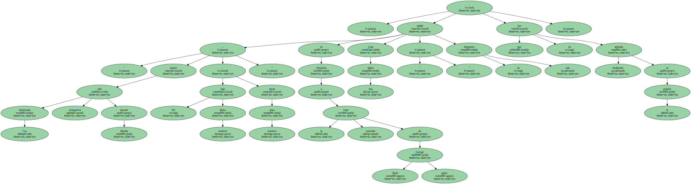Aplausos y gritos recibieron esta noche en Los Angeles a Joseph Lieberman , que mañana , miércoles , será proclamado el primer judío candidato a la vicepresidencia de los Estados Unidos.
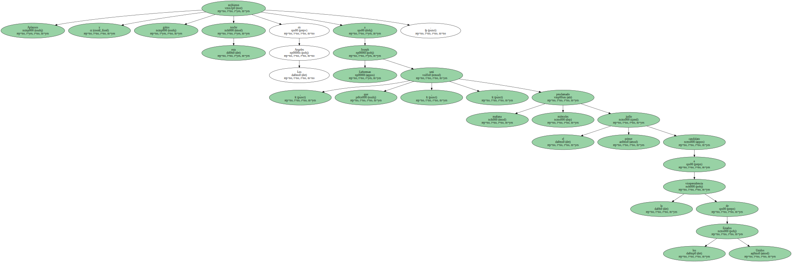Aplausos y gritos recibieron esta noche en Los Angeles a Joseph Lieberman , que mañana , miércoles , será proclamado el primer judío candidato a la vicepresidencia de los Estados Unidos.
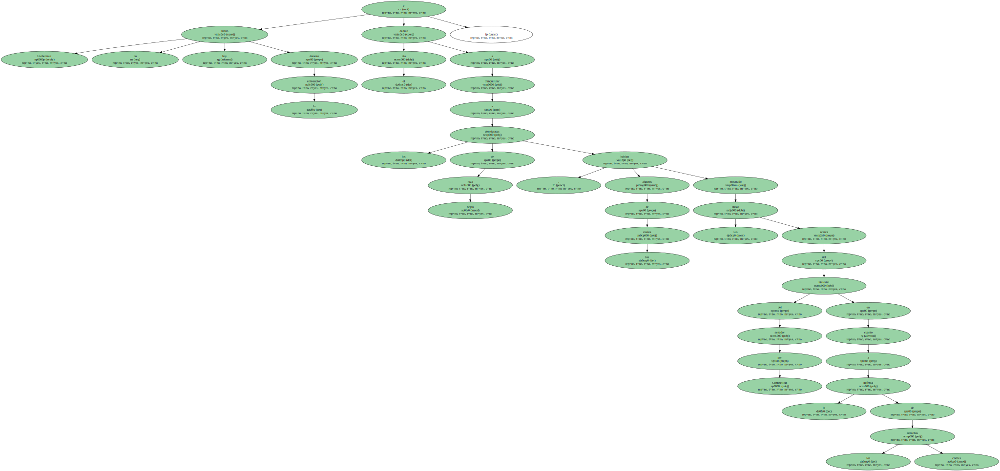Aplausos y gritos recibieron esta noche en Los Angeles a Joseph Lieberman , que mañana , miércoles , será proclamado el primer judío candidato a la vicepresidencia de los Estados Unidos.
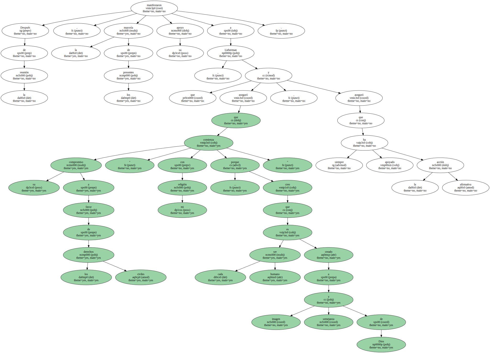Aplausos y gritos recibieron esta noche en Los Angeles a Joseph Lieberman , que mañana , miércoles , será proclamado el primer judío candidato a la vicepresidencia de los Estados Unidos.
Aplausos y gritos recibieron esta noche en Los Angeles a Joseph Lieberman , que mañana , miércoles , será proclamado el primer judío candidato a la vicepresidencia de los Estados Unidos.
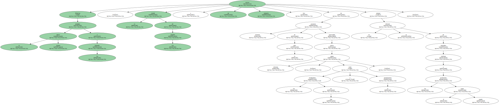Aplausos y gritos recibieron esta noche en Los Angeles a Joseph Lieberman , que mañana , miércoles , será proclamado el primer judío candidato a la vicepresidencia de los Estados Unidos.
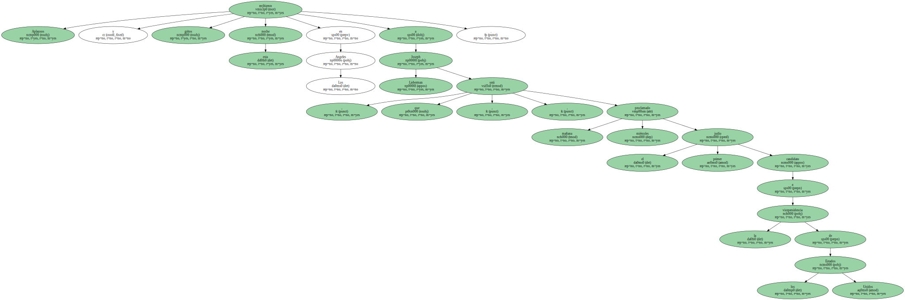Aplausos y gritos recibieron esta noche en Los Angeles a Joseph Lieberman , que mañana , miércoles , será proclamado el primer judío candidato a la vicepresidencia de los Estados Unidos.

Aplausos y gritos recibieron esta noche en Los Angeles a Joseph Lieberman , que mañana , miércoles , será proclamado el primer judío candidato a la vicepresidencia de los Estados Unidos.

Lieberman no habló hoy durante la convención y dedicó el día a tranquilizar a los demócratas de raza negra , algunos de los cuales habían mostrado sus dudas acerca del historial del senador por Connecticut en cuanto a la defensa de los derechos civiles.
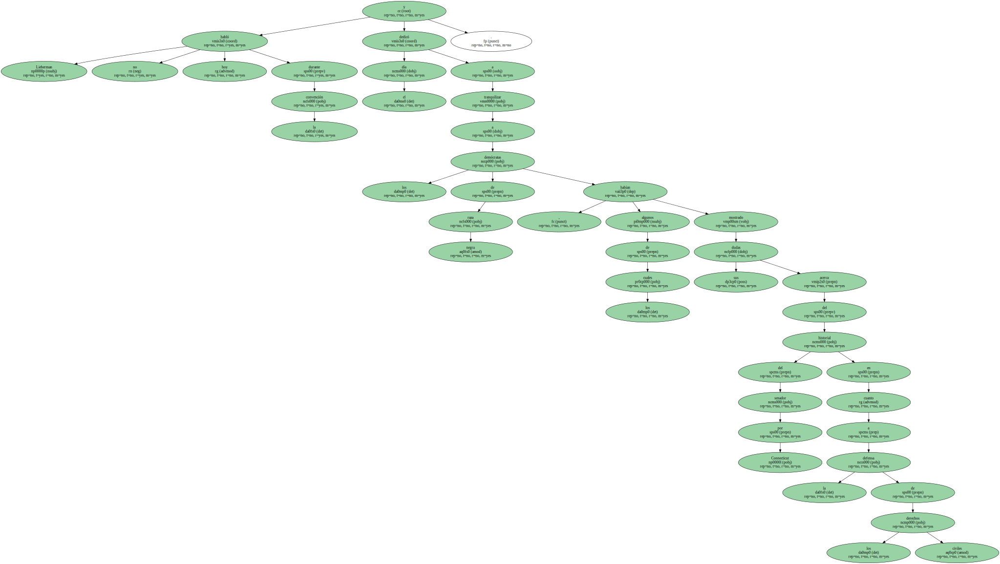Después de la reunión , la mayoría de los presentes manifestaron su apoyo a Lieberman , que aseguró que su compromiso a favor de los derechos civiles " comienza con mi religión ... porque creo que cada ser humano es creado a imagen y semejanza de Dios " , y aseguró que siempre ha apoyado la acción afirmativa.
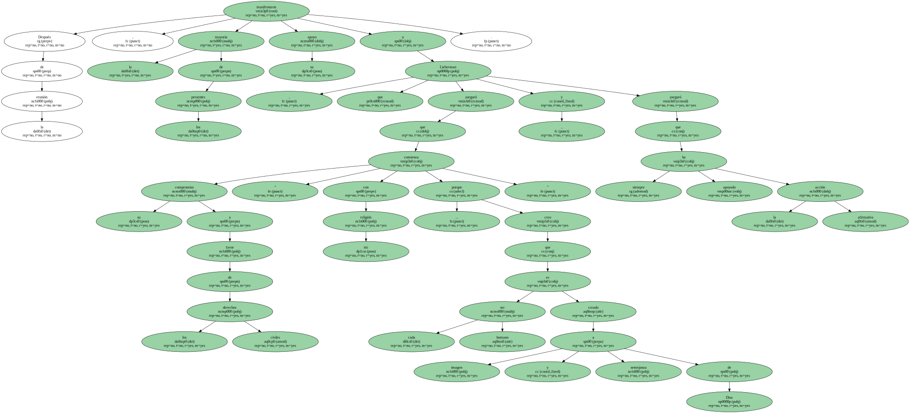Ante la convención , el reverendo Jesse Jackson , que en 1984 y 1988 luchó por la candidatura a la Presidencia de EEUU , pidió el voto para el equipo demócrata , e ironizó acerca de las posturas de " papá Bush " y del " bebé Bush " , en referencia al candidato republicano.
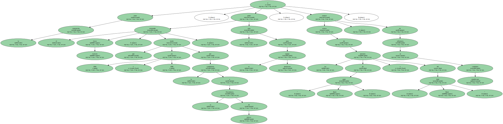Mientras el centro Staples aclamaba a los Kennedy , la ciudad de Los Angeles volvió a ser escenario hoy de diversas protestas en la calle convocadas contra diversas causas , como los bombardeos en Iraq y la globalización , aunque no se informó de altercados similares a los producidos el lunes pasado.
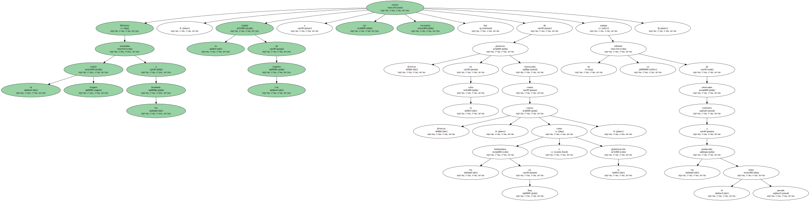